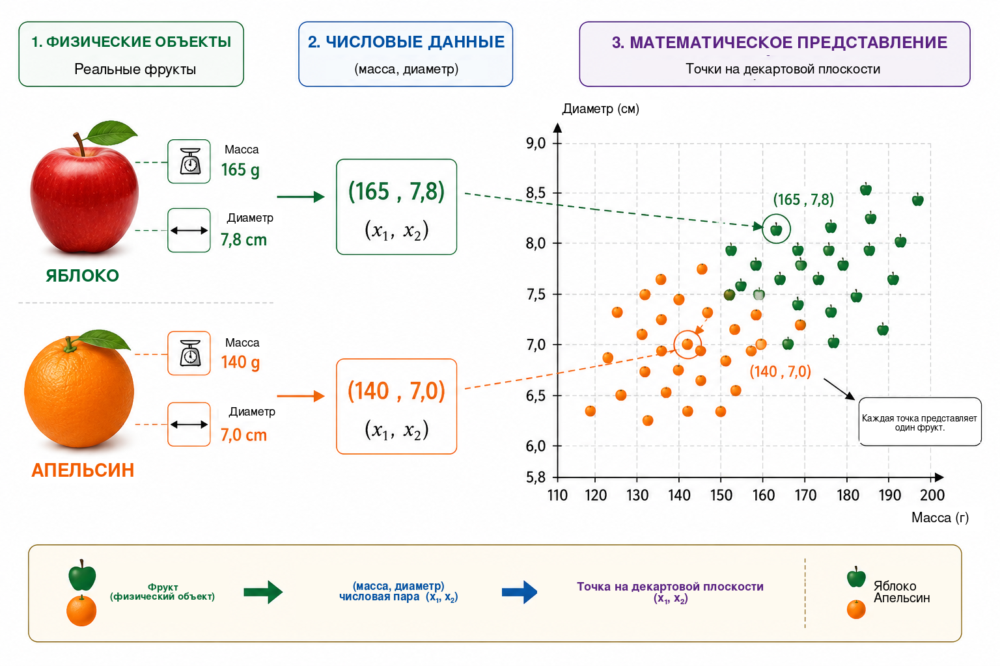
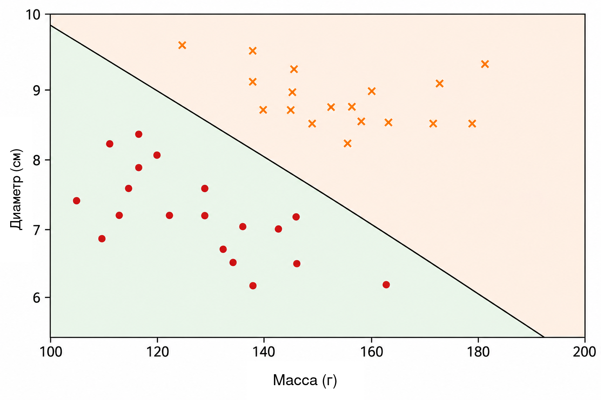
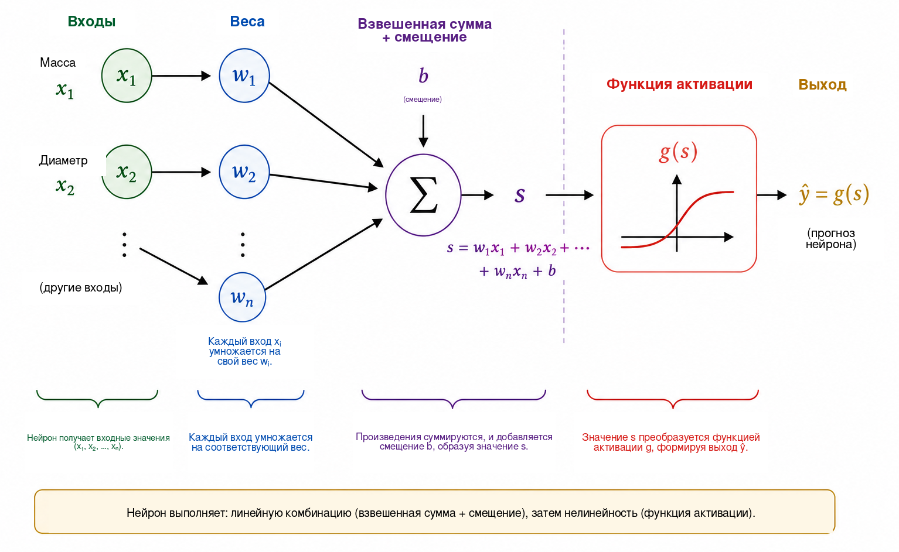
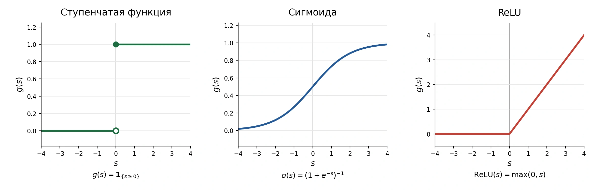
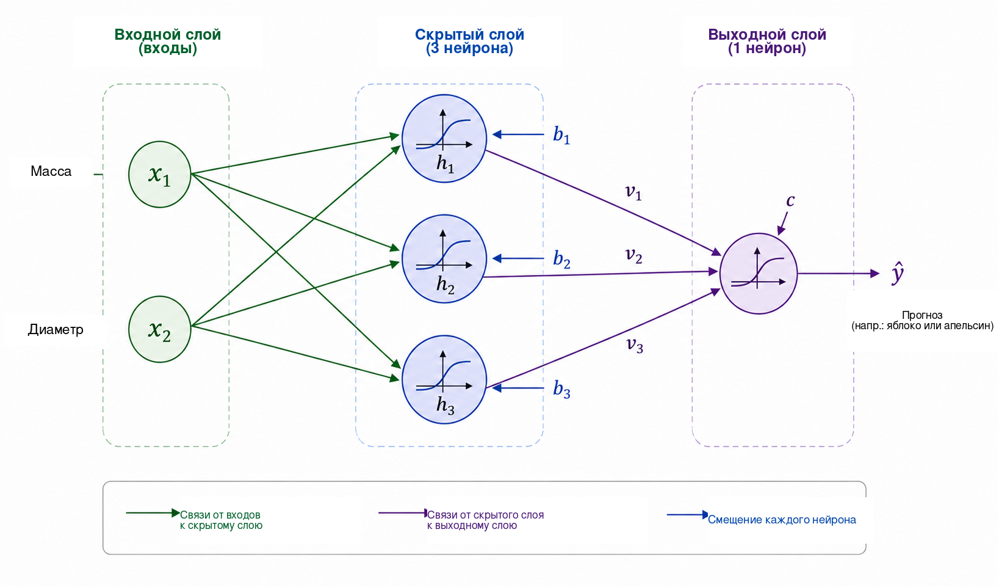
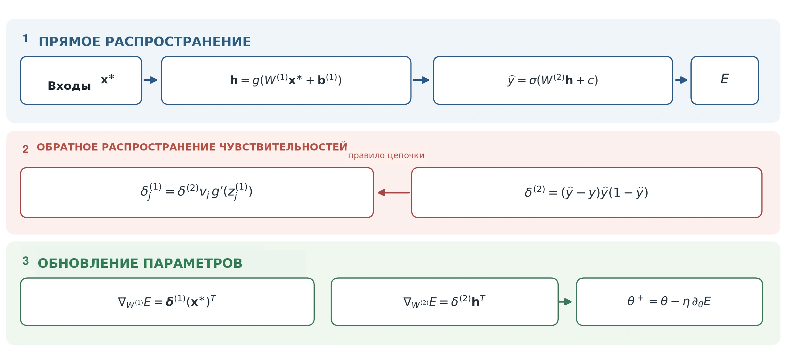
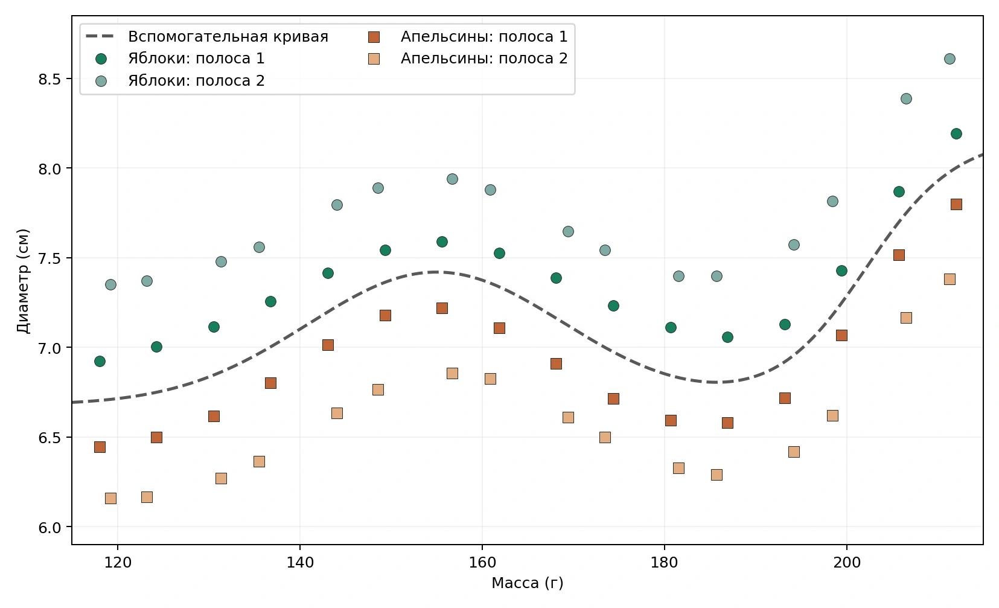
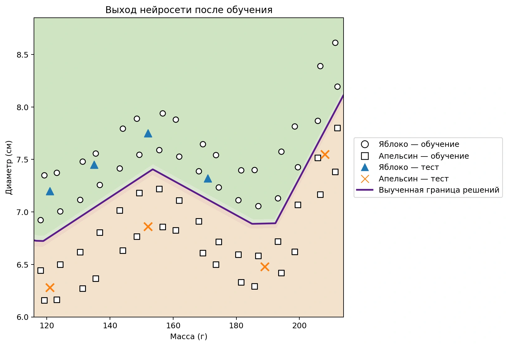

Когда компьютер может учиться?
В повседневной жизни мы принимаем решения о классификации почти не замечая этого. Глядя на фрукт, мы быстро определяем, яблоко это или апельсин; когда на телефон приходит сообщение, отличаем обычную переписку от нежелательной рекламы; в медицинском анализе несколько измерений могут совместно использоваться для принятия решения; в финансовых организациях перед выдачей кредита оценивается множество сведений. Во всех этих примерах несколько признаков рассматриваются вместе, чтобы получить ответ.
Во многих традиционных компьютерных программах правила, приводящие к такому ответу, явно задаются программистом. Этот подход хорошо работает, когда правила известны и могут быть сформулированы однозначно. Он становится менее эффективным, если данные сильно изменчивы или трудно заранее перечислить все условия, необходимые для хорошего решения. Отсюда возникает естественный вопрос:
Можно ли построить программу, которая сама изучит правило принятия решения по примерам, вместо того чтобы получить это правило заранее?
Это одна из центральных идей машинного обучения — области искусственного интеллекта, изучающей методы построения моделей по данным . В задаче обучения с учителем алгоритм получает примеры вместе с правильными ответами, а мы стремимся получить модель, способную делать полезные прогнозы и для случаев, не использованных при обучении. Среди многочисленных моделей, разработанных для этой цели, искусственные нейронные сети приобрели особое значение в распознавании изображений, обработке языка, анализе сигналов и прогнозировании временных рядов .
Использование нейронных сетей как моста между математикой, вычислениями и школьным образованием уже обсуждалось в журнале Professor de Matemática Online Батистой и Мартинсом , которые представили занятие, объединяющее подготовку учителей, Python и распознавание цифр. Настоящая статья следует дополняющему пути. Наша основная цель — раскрыть внутреннюю математику небольшой нейронной сети, начиная с аналитической геометрии и шаг за шагом переходя к вычислению градиентов и ручной реализации обратного распространения ошибки.
Несмотря на сложность современных приложений, математическое ядро нейронной сети можно объяснить с помощью сравнительно знакомых идей. На базовом уровне нейронная сеть представляет собой композицию функций, параметры которых настраиваются по данным. Мы начинаем с простой геометрической задачи, переосмысливаем разделяющую прямую как искусственный нейрон, соединяем несколько нейронов, изучаем роль функций активации и показываем, как производные позволяют автоматически корректировать параметры сети. Затем реализуем небольшой полный пример на Python, сохраняя непосредственное соответствие между уравнениями и кодом.
Математическое представление задачи
Чтобы понять работу нейронной сети, начнём с намеренно простой задачи: отличать яблоки от апельсинов. У фрукта есть много признаков, которые могли бы быть полезны для этой цели: цвет, масса, диаметр, текстура и аромат. Однако начальная математическая модель не обязана включать всю эту сложность. Мы будем использовать только две легко измеряемые величины: массу в граммах и диаметр в сантиметрах.
Каждый фрукт будем представлять упорядоченной парой \[(x_1,x_2),\] где \[x_1=\text{масса} \qquad\text{и}\qquad x_2=\text{диаметр}.\]
Таким образом, пара \((155,\;7.2)\) представляет фрукт массой \(155\) г и диаметром \(7.2\) см. Заменяя физический объект двумя числовыми измерениями, мы сопоставляем каждому фрукту точку на декартовой плоскости: первая координата задаёт его массу, вторая — диаметр. На рисунке 1 показано такое представление для условного набора яблок и апельсинов.

Такое преобразование меняет сам взгляд на задачу. Вместо прямого вопроса о том, как распознать яблоко или апельсин, можно поставить геометрический вопрос: как разделить на плоскости точки, принадлежащие двум классам? Эта смена точки зрения принципиальна для машинного обучения. Изображения, тексты, звуки и экспериментальные сигналы должны быть преобразованы в числовые представления, прежде чем алгоритм сможет их обработать. В нашем примере объект имеет лишь две координаты; в реальных приложениях представление может содержать сотни, тысячи и даже миллионы компонент. Принцип остаётся тем же: каждому примеру сопоставляется набор чисел, а модель ищет правило, отображающее это представление в требуемый ответ.
Начнём с простейшего доступного геометрического правила и спросим, может ли одна прямая достаточно хорошо отделить точки яблок от точек апельсинов.
Прямая как классификатор
После того как каждый фрукт представлен точкой на декартовой плоскости, классификация становится геометрической задачей: может ли прямая отделить яблоки от апельсинов? Этот вопрос выражает основную идею важного семейства методов машинного обучения, известных как линейные классификаторы.
Рассмотрим прямую, пересекающую облако данных, как показано на рисунке 2. Она делит плоскость на две полуплоскости. Если большинство точек яблок лежит по одну сторону, а большинство точек апельсинов — по другую, положение нового фрукта относительно прямой можно использовать как правило классификации. Измерив его массу и диаметр, мы представляем фрукт точкой и определяем, в какой полуплоскости она находится.

На декартовой плоскости \((x_1,x_2)\) прямая может быть описана уравнением \[w_1x_1+w_2x_2+b=0, \qquad (w_1,w_2)\neq(0,0).\]
Вектор \((w_1,w_2)\) перпендикулярен прямой и поэтому определяет её ориентацию, а параметр \(b\) влияет на её положение. В таком представлении есть небольшая избыточность: умножение \(w_1\), \(w_2\) и \(b\) на одну и ту же ненулевую константу даёт ту же самую прямую. Следовательно, параметры границы не уникальны. Их числовая интерпретация также зависит от масштаба переменных. Поскольку масса измеряется в граммах, а диаметр — в сантиметрах, сравнивать численные величины \(w_1\) и \(w_2\) без учёта единиц измерения нельзя.
Само уравнение прямой позволяет просто определить, по какую сторону границы находится точка. Введём величину \[s(x_1,x_2)=w_1x_1+w_2x_2+b.\]
Если \(s(x_1,x_2)=0\), точка лежит на прямой. Если \(s(x_1,x_2)>0\), она находится в одной полуплоскости; если \(s(x_1,x_2)<0\) — в другой. Если договориться, что положительные значения соответствуют яблокам, а отрицательные — апельсинам, правило принимает вид \[\begin{cases} s(x_1,x_2)\geq 0 & \Longrightarrow \text{яблоко},\\ s(x_1,x_2)<0 & \Longrightarrow \text{апельсин}. \end{cases}\]
Например, рассмотрим границу, заданную параметрами \[w_1=\frac{1}{10}, \qquad w_2=2, \qquad b=-30.\] Для фрукта массой \(160\) г и диаметром \(7.8\) см \[\begin{aligned} s &=\frac{1}{10}\times160+2\times7.8-30\\ &=16+15.6-30\\ &=1.6. \end{aligned}\] Поскольку значение положительно, точка находится в полуплоскости, которую мы связали с яблоками. Такой классификатор отнесёт фрукт к классу яблок.
Не всякий выбор \(w_1\), \(w_2\) и \(b\) обеспечивает хорошую классификацию. Одни прямые плохо разделяют группы, другие дают меньше ошибок. Задача обучения как раз состоит в том, чтобы по ранее размеченным примерам найти значения параметров, уменьшающие некоторую меру ошибки модели. Вместо того чтобы программировать положение прямой непосредственно, мы хотим, чтобы алгоритм настраивал её коэффициенты по данным.
Одна прямая может работать хорошо, когда классы приблизительно линейно разделимы. Для более сложных наборов данных может потребоваться нелинейная граница. Прежде чем обсуждать это ограничение, переосмыслим построенный классификатор как элементарную вычислительную единицу — искусственный нейрон.
Искусственный нейрон
В предыдущем разделе выражение \[s=w_1x_1+w_2x_2+b\] использовалось для определения стороны прямой, на которой находится фрукт. То же выражение можно рассматривать как первый этап вычисления, выполняемого искусственным нейроном. Нейрон получает числовые входы, объединяет их с помощью весов и смещения, а затем применяет математическую функцию для получения выхода.
В нашем примере входами служат масса \(x_1\) и диаметр \(x_2\). Каждый вход умножается на параметр, называемый весом; произведения складываются вместе с постоянным членом \(b\), называемым смещением. На рисунке 3 эта операция показана схематически.

Веса определяют, как изменения входов влияют на значение \(s\). Если \(x_2\) и все остальные величины фиксированы, изменение \(\Delta x_1\) изменяет \(s\) на \(w_1\Delta x_1\). Аналогично, изменение \(\Delta x_2\) меняет его на \(w_2\Delta x_2\). Знак веса также важен: при положительном весе увеличение входа увеличивает \(s\), а при отрицательном — уменьшает. Это толкование требует осторожности, если переменные имеют разные единицы и масштабы. Поэтому на практике входные данные перед обучением часто нормируют или стандартизуют.
Смещение \(b\) — постоянный член аффинного преобразования. Геометрически оно позволяет сдвигать границу решения. Если \(b=0\), уравнение \[w_1x_1+w_2x_2=0\] заставляет прямую проходить через начало координат. При наличии смещения граница может располагаться в других местах. Эквивалентно, при \(x_1=x_2=0\) получаем просто \(s=b\).
Значение \(s\) не обязательно является окончательным выходом нейрона. Обычно к нему применяется функция активации \(g\): \[\widehat{y}=g(s)=g\left(w_1x_1+w_2x_2+b\right).\] Таким образом, вычисление состоит из двух этапов: \[\begin{aligned} s &= w_1x_1+w_2x_2+b,\\[4pt] \widehat{y} &= g(s). \end{aligned}\]
Для параметров из предыдущего раздела получаем \(s=1.6\). Если выбрать ступенчатую функцию \[g(s)= \begin{cases} 1, & s\geq0,\\ 0, & s<0, \end{cases}\] то \(\widehat{y}=g(1.6)=1\). По принятому соглашению фрукт классифицируется как яблоко. При такой активации решение меняется при пересечении \(s=0\), поэтому граница классов точно задаётся уравнением \[w_1x_1+w_2x_2+b=0.\]
Итак, отдельный нейрон — простой математический объект с настраиваемыми параметрами. Его настоящая сила проявляется при соединении многих таких элементов. Но прежде чем строить сеть, нужно понять, почему функция активации принципиально важна.
Зачем нужна функция активации?
Сначала нейрон вычисляет значение с помощью аффинного преобразования и только затем применяет функцию активации. Этот второй этап необходим, если нейронная сеть должна представлять сложные зависимости. Чтобы увидеть причину, представим сеть без функций активации. Каждый её элемент имел бы вид \[y=w_1x_1+w_2x_2+b.\]
Для одномерной иллюстрации пусть первый элемент вычисляет \[h=ax+b\] а второй — \[y=ch+d.\] Подстановка даёт \[y=c(ax+b)+d=acx+(cb+d),\] то есть снова аффинную функцию от \(x\). То же справедливо и в многомерном случае: композиция аффинных преобразований остаётся аффинной. Поэтому добавление множества слоёв без нелинейной операции не делает сеть принципиально более выразительной; всю композицию можно заменить одним аффинным преобразованием.
Функция активации снимает это ограничение. После вычисления \(s\) нейрон применяет, как правило, нелинейное отображение \[h=g(s).\] Когда несколько таких элементов соединены, полученная композиция уже не сводится к одному аффинному преобразованию. Благодаря этому сеть способна строить более сложные границы решений.
Самая простая активация — ступенчатая функция \[g(s)= \begin{cases} 1, & s\geq0,\\ 0, & s<0. \end{cases}\] Она формирует бинарное решение и очень полезна для понимания классификации. Однако её производная равна нулю при \(s\neq0\) и не определена при \(s=0\). Поскольку обучение на основе градиента использует производные, чтобы определить, как должны изменяться параметры, ступенчатая функция не подходит для такого механизма обучения.
Одна из альтернатив — сигмоидная функция \[\sigma(s)=\frac{1}{1+e^{-s}}.\] Она отображает любое вещественное число в значение строго между \(0\) и \(1\). При сильно отрицательном \(s\) выход приближается к \(0\), при сильно положительном — к \(1\), а между этими крайностями переход является плавным. Сигмоида дифференцируема всюду, причём \[\sigma'(s)=\sigma(s)\bigl(1-\sigma(s)\bigr).\] Поскольку её значения лежат между \(0\) и \(1\), она часто используется в выходном слое бинарного классификатора. В вероятностной постановке с подходящей функцией потерь выход можно интерпретировать как оценку вероятности класса, обозначенного единицей. Однако в скрытых слоях сигмоида может создавать проблему: при входах большой абсолютной величины её производная становится очень малой, что способствует возникновению проблемы исчезающего градиента в глубоких сетях.
Широко используемая функция активации скрытых слоёв — ReLU (Rectified Linear Unit), \[\mathrm{ReLU}(s)=\mathrm{max}(0,s) = \begin{cases} 0, & s<0,\\ s, & s\geq0. \end{cases}\] Хотя она состоит из двух линейных частей, ReLU не является линейной функцией на всей области определения. Её производная равна \(0\) при \(s<0\) и \(1\) при \(s>0\). В точке \(s=0\) обычная производная не существует, поэтому программные реализации используют некоторое соглашение для градиента. Для положительных входов производная не уменьшается с ростом \(s\), что устраняет один из механизмов насыщения, характерный для сигмоиды.
На рисунке 4 эти три функции сравниваются визуально: резкий скачок ступенчатой функции, плавный переход сигмоиды и изменение наклона ReLU.

Их основные свойства сведены ниже.
| Функция | Выход | Производная | Типичное применение |
|---|---|---|---|
| Ступенчатая | \(\{0,1\}\) | Ноль при \(s\neq0\); не определена при \(s=0\) | Исторические модели и учебные примеры |
| Сигмоида | \((0,1)\) | Существует при любом \(s\) | Выходной слой бинарной классификации |
| ReLU | \([0,\infty)\) | \(0\) при \(s<0\) и \(1\) при \(s>0\) | Скрытые слои |
Детали этих функций различаются, но их общая концептуальная роль состоит во внесении нелинейности. Именно эта нелинейность позволяет небольшой сети из следующего раздела представлять зависимости, которые невозможно выразить одной прямой.
Для дальнейшего изучения можно обратиться к классическому изложению нейронных сетей у Хайкина ; Гудфеллоу, Бенжио и Курвилль рассматривают функции активации и обучение глубоких сетей в более широком контексте. Свободно доступная книга Нильсена особенно удобна для развития интуиции о нейронах, активациях и обучении.
Построение небольшой нейронной сети
Рассмотрим сеть с двумя входами, одним скрытым слоем из трёх нейронов и одним выходным нейроном. Входы остаются прежними: \[x_1=\text{масса}, \qquad x_2=\text{диаметр},\] и оба подаются на каждый скрытый нейрон, как показано на рисунке 5.

Обозначим выходы скрытого слоя через \(h_1\), \(h_2\) и \(h_3\). Каждый нейрон получает одни и те же два входа, но имеет собственные веса и смещение: \[\begin{aligned} h_1&=g\left(w_{11}x_1+w_{12}x_2+b_1\right),\\[4pt] h_2&=g\left(w_{21}x_1+w_{22}x_2+b_2\right),\\[4pt] h_3&=g\left(w_{31}x_1+w_{32}x_2+b_3\right). \end{aligned}\]
Хотя все три нейрона получают одинаковые массу и диаметр, они могут давать разные ответы, потому что их параметры различны. Во время обучения параметры настраиваются так, чтобы промежуточные активации становились полезными для классификации.
Три величины \(h_1\), \(h_2\) и \(h_3\) передаются выходному нейрону, который вычисляет \[s_{\mathrm{out}}=v_1h_1+v_2h_2+v_3h_3+c\] и формирует \[\widehat{y}=g_{\mathrm{out}}\left(s_{\mathrm{out}}\right).\] Для нашей бинарной задачи используем сигмоиду на выходе: \[\widehat{y}=\sigma\left(v_1h_1+v_2h_2+v_3h_3+c\right), \qquad 0<\widehat{y}<1.\]
Пусть \(y=1\) означает яблоко, а \(y=0\) — апельсин. Тогда порог \(0.5\) задаёт решение \[\widehat{y}\geq0.5 \Longrightarrow \text{яблоко}, \qquad \widehat{y}<0.5 \Longrightarrow \text{апельсин}.\] Значения, близкие к \(1\), тем самым тесно связаны с яблоками, а значения, близкие к \(0\), — с апельсинами. Как отмечалось ранее, численная интерпретация \(\widehat{y}\) как вероятности требует дополнительных предположений о модели и её обучении. Для используемого здесь правила классификации достаточно рассматривать \(\widehat{y}\) как непрерывный выход сети.
Ключевая особенность этой архитектуры — промежуточное представление \[(x_1,x_2) \longrightarrow (h_1,h_2,h_3) \longrightarrow \widehat{y}.\] Сеть получает два признака и строит три новые величины, прежде чем сформировать окончательный ответ. Эти активации не выбираются вручную: они зависят от весов и смещений и поэтому изменяются в процессе обучения параметров.
Несмотря на небольшой размер, сеть уже содержит тринадцать настраиваемых параметров. Три скрытых нейрона содержат \[3(2+1)=9\] параметров, а выходной нейрон добавляет \[3+1=4.\] Следовательно, \[9+4=13.\]
То же число особенно прозрачно в матричной записи. Определим \[\mathbf{x}= \begin{bmatrix} x_1\\x_2 \end{bmatrix}, \qquad W^{(1)}= \begin{bmatrix} w_{11}&w_{12}\\ w_{21}&w_{22}\\ w_{31}&w_{32} \end{bmatrix}, \qquad \mathbf{b}^{(1)}= \begin{bmatrix} b_1\\b_2\\b_3 \end{bmatrix}.\] Тогда скрытый слой компактно записывается как \[\mathbf{h}=g\left(W^{(1)}\mathbf{x}+\mathbf{b}^{(1)}\right),\] где \(g\) действует покомпонентно. Для выхода \[\widehat{y} = \sigma\left(W^{(2)}\mathbf{h}+b^{(2)}\right),\] где \[W^{(2)}= \begin{bmatrix} v_1&v_2&v_3 \end{bmatrix}.\]
Эта запись предвосхищает структуру программы на Python. Когда фрукт подаётся на вход и мы последовательно вычисляем активации вплоть до \(\widehat{y}\), выполняется прямое распространение (forward pass). Главный вопрос остаётся прежним: как автоматически определить тринадцать параметров так, чтобы прогнозы соответствовали данным?
Как обучается нейронная сеть?
Веса и смещения сети заранее неизвестны: их настраивают по примерам с известными метками классов. Обучение повторяет прямой проход, оценку функции потерь, вычисление градиентов и обновление параметров (рисунок 6). Правило цепочки позволяет найти локальное влияние каждого параметра на потерю. Сначала нужно численно измерить расхождение между прогнозом и ожидаемым ответом. Функция потерь приписывает каждому прогнозу штраф и позволяет сравнивать разные наборы параметров. В отличие от простого подсчёта ошибок классификации, непрерывная потеря учитывает расстояние до правильного ответа и имеет производные, определяющие направление обучения. Рассмотрим апельсин массой \(140\) г и диаметром \(7.0\) см (\(y=0\)). Если выход сети \(\widehat y\in(0,1)\), квадратичная потеря для одного примера имеет вид
\[\label{eq:perda} E=\frac12(\widehat y-y)^2.\]
Здесь \(y\) — правильная метка, \(\widehat y\) — прогноз. Потеря неотрицательна и равна нулю при совпадении прогноза и метки. Для апельсина прогнозы \(0.80\) и \(0.60\) дают соответственно \(E=0.32\) и \(E=0.18\). При пороге \(0.5\) оба ответа неверны, но потеря показывает степень расхождения. Коэффициент \(1/2\) не меняет минимум, однако упрощает производную. Для \(N\) обучающих примеров вводим среднюю потерю
\[\label{eq:perda_media} J=\frac1N\sum_{i=1}^{N}E_i.\]
Средняя потеря характеризует качество подгонки к обучающей выборке. Уменьшение \(J\) само по себе не гарантирует точности на новых наблюдениях. Квадратичная потеря выбрана за прозрачность вычислений; ниже её градиент сравнивается с градиентом бинарной кросс-энтропии без изменения численного эксперимента [2, 3].

Пусть \(\theta\) — вес или смещение. Производная \(\partial J/\partial\theta\) измеряет локальную чувствительность средней потери к этому параметру. Шаг градиентного спуска записывается как
\[\label{eq:descida} \theta_{\mathrm{new}}=\theta_{\mathrm{old}}-\eta\frac{\partial J}{\partial\theta},\qquad \eta>0.\]
Скорость обучения \(\eta\) задаёт величину шага: слишком малая может замедлять сходимость, слишком большая — вызывать колебания или расходимость. Если обновление выполняется после каждого наблюдения (раздел 8), производная \(\partial J/\partial\theta\) заменяется на \(\partial E_i/\partial\theta\). Так определяется используемый здесь стохастический градиентный спуск (SGD).
Правило цепочки в сети 2–3–1
Рассмотрим сеть на рисунке [fig:pequena_rede] с тремя скрытыми ReLU-нейронами и сигмоидой на выходе. Масса (граммы) и диаметр (сантиметры) имеют разные масштабы, что может ухудшить обусловленность задачи настройки. Стандартизируем каждый признак: \(x_j^\ast=(x_j-\mu_j)/\sigma_j\), где \(\mu_j\) и \(\sigma_j>0\) — опорные среднее и стандартное отклонение. Получаются безразмерные входы сопоставимого масштаба. В вычислительном эксперименте статистики определяются только по обучающей выборке, без утечки информации из теста. Для следующего ручного расчёта центры и масштабы фиксированы ради простоты. Для \(\mathbf{x}^\ast=(x_1^\ast,x_2^\ast)^{\mathsf T}\) прямой проход даёт
\[\label{eq:forward} \begin{aligned} \mathbf{z}^{(1)}&=W^{(1)}\mathbf{x}^{\ast}+\mathbf{b}^{(1)}, &\mathbf{h}&=\operatorname{ReLU}(\mathbf{z}^{(1)}),\\ z^{(2)}&=W^{(2)}\mathbf{h}+c, &\widehat y&=\sigma(z^{(2)}). \end{aligned}\]
Здесь \(c=b^{(2)}\) — выходное смещение, \(W^{(2)}=(v_1,v_2,v_3)\). Обратное распространение начинается с выходного нейрона последовательным применением правила цепочки:
\[\label{eq:delta_saida} \begin{aligned} \delta^{(2)}:=\frac{\partial E}{\partial z^{(2)}} &=\underbrace{\frac{\partial E}{\partial\widehat y}}_{\widehat y-y} \underbrace{\frac{\partial\widehat y}{\partial z^{(2)}}}_{\widehat y(1-\widehat y)} =(\widehat y-y)\widehat y(1-\widehat y),\\ \frac{\partial E}{\partial v_j}&=\delta^{(2)}h_j, \qquad \frac{\partial E}{\partial c}=\delta^{(2)}. \end{aligned}\]
Каждая скрытая активация \(h_j\) зависит также от соответствующих весов и смещения. Поэтому вычисляем чувствительности скрытых нейронов:
\[\label{eq:delta_oculta} \begin{aligned} \delta_j^{(1)}:=\frac{\partial E}{\partial z_j^{(1)}} &=\delta^{(2)}v_j\,\operatorname{ReLU}'(z_j^{(1)}),\\ \frac{\partial E}{\partial w_{jk}} &=\delta_j^{(1)}x_k^{\ast},\qquad \frac{\partial E}{\partial b_j}=\delta_j^{(1)}. \end{aligned}\]
ReLU не дифференцируема в нуле; используем вычислительное соглашение \(\operatorname{ReLU}'(0)=0\). Величины \(\delta^{(2)}\) и \(\delta_j^{(1)}\) — локальные чувствительности функции потерь, а не физические сигналы ошибки, проходящие через сеть. Их повторное использование позволяет найти все тринадцать градиентов без отдельного дифференцирования по каждому весу.
Полный численный пример обновления параметров
Только в этом примере задаём для массы центр \(160\) г и масштаб \(20\) г, а для диаметра \(7.5\) см и \(0.5\) см. Фрукт \((140\,\mathrm{g},7.0\,\mathrm{cm})\) соответствует безразмерному входу
\[\label{eq:exemplo_entrada} \mathbf{x}^{\ast}=\begin{bmatrix}(140-160)/20\\(7.0-7.5)/0.5\end{bmatrix} =\begin{bmatrix}-1\\-1\end{bmatrix}.\]
Эти опорные значения выбраны для демонстрации; в разделе 8 среднее и стандартное отклонение вычисляются из обучающих данных. Зададим тринадцать начальных параметров:
\[\label{eq:param_iniciais} W^{(1)}=\begin{bmatrix} 0.2&0.1\\-0.3&0.2\\0.1&-0.4 \end{bmatrix},\quad \mathbf{b}^{(1)}=\begin{bmatrix}\phantom{-}0.5\\\phantom{-}0.2\\-0.5\end{bmatrix},\quad W^{(2)}=\begin{bmatrix}\phantom{-}0.5&-0.4&\phantom{-}0.3\end{bmatrix},\quad c=1.\]
Из уравнения forward последовательно получаем
\[\label{eq:exemplo_forward} \begin{gathered} \mathbf{z}^{(1)}=(0.2,\;0.3,\;-0.2)^{\mathsf T},\qquad \mathbf{h}=(0.2,\;0.3,\;0)^{\mathsf T},\\ z^{(2)}=0.5(0.2)-0.4(0.3)+1=0.98,\\ \widehat y=\sigma(0.98)\simeq0.727108,\qquad E\simeq0.264343. \end{gathered}\]
Начальный прогноз соответствует неверному классу. По уравнениям delta_saida и delta_oculta находим
\[\label{eq:exemplo_gradientes} \begin{gathered} \delta^{(2)}\simeq0.144274,\qquad \boldsymbol{\delta}^{(1)}\simeq(0.072137,\;-0.057710,\;0)^{\mathsf T},\\ \frac{\partial E}{\partial W^{(2)}}\simeq (0.028855,\;0.043282,\;0),\qquad \frac{\partial E}{\partial W^{(1)}}\simeq \begin{bmatrix}-0.072137&-0.072137\\\phantom{-}0.057710&\phantom{-}0.057710\\\phantom{-}0&\phantom{-}0\end{bmatrix}. \end{gathered}\]
Третий скрытый нейрон неактивен (\(z_3^{(1)}<0\)), поэтому градиенты его входных весов и смещения на данном шаге равны нулю. При \(\eta=0.05\) одновременно обновляем все параметры по правилу \(\theta_{\mathrm{new}}=\theta_{\mathrm{old}}-0.05\,\partial E/\partial\theta\). Таблица 1 показывает часть тринадцати обновлений; остальные вычисляются аналогично.
| Параметр \(\theta\) | До | \(\partial E/\partial\theta\) | После |
|---|---|---|---|
| \(v_1\) | \(0.500000\) | \(0.028855\) | \(0.498557\) |
| \(v_2\) | \(-0.400000\) | \(0.043282\) | \(-0.402164\) |
| \(c\) | \(1.000000\) | \(0.144274\) | \(0.992786\) |
| \(w_{11}\) | \(0.200000\) | \(-0.072137\) | \(0.203607\) |
| \(w_{21}\) | \(-0.300000\) | \(0.057710\) | \(-0.302885\) |
| \(b_1\) | \(0.500000\) | \(0.072137\) | \(0.496393\) |
| \(w_{31}\) | \(0.100000\) | \(0\) | \(0.100000\) |
Повторный прямой проход со всеми обновлёнными параметрами даёт \(\widehat y_{\mathrm{new}}\simeq0.723717\) и \(E_{\mathrm{new}}\simeq0.261883\): потеря уменьшилась за один шаг. Класс пока не изменился; для обучения необходимо многократно повторять процедуру на разных примерах и эпохах.
Квадратичная потеря и бинарная кросс-энтропия
Квадратичная функция потерь удобна для демонстрации правила цепочки. Однако в бинарной классификации с сигмоидальным выходом часто используют также бинарную кросс-энтропию. При \(y\in\{0,1\}\) и \(\widehat y=\sigma(z)\) потеря для наблюдения равна
\[\label{eq:entropia_cruzada} E_{\mathrm{CE}}=-y\ln\widehat y-(1-y)\ln(1-\widehat y).\]
Квадратичная потеря штрафует численное расхождение прогноза с меткой, а кросс-энтропия — малую вероятность, приписанную наблюдаемой метке, при интерпретации \(\widehat y\) как вероятности класса \(1\). Основное отличие при обучении видно из производной по выходному аргументу \(z\). Применяя правило цепочки и \(\sigma'(z)=\widehat y(1-\widehat y)\), получаем
\[\label{eq:derivada_entropia_cruzada} \begin{aligned} \frac{\partial E_{\mathrm{CE}}}{\partial z} &=\left(-\frac{y}{\widehat y}+\frac{1-y}{1-\widehat y}\right) \widehat y(1-\widehat y) =\widehat y-y,\\ \frac{\partial E_{\mathrm{SE}}}{\partial z} &=(\widehat y-y)\widehat y(1-\widehat y), \qquad E_{\mathrm{SE}}=\tfrac12(\widehat y-y)^2. \end{aligned}\]
Для сравнения предположим отдельный иллюстративный прогноз \(\widehat y=0.80\) для апельсина (\(y=0\)). Тогда \(E_{\mathrm{SE}}=0.32\), \(E_{\mathrm{CE}}=-\ln(0.20)\simeq1.60944\); производные по \(z\) равны соответственно \(0.128\) и \(0.80\). При \(\eta=0.05\) изолированное изменение выходного смещения (\(\partial E/\partial c=\partial E/\partial z\)) составляет \(\Delta c=-0.0064\) для квадратичной потери и \(\Delta c=-0.0400\) для кросс-энтропии. Это не замена значениям полного примера выше. При кросс-энтропии множитель \(\widehat y(1-\widehat y)\) исчезает из чувствительности выходного слоя. Это предотвращает дополнительное ослабление градиента из-за насыщения сигмоиды при крайне ошибочном прогнозе именно на этом слое. Малые градиенты в других слоях остаются возможными; ускорение обучения не гарантировано. Численные значения разных потерь не следует непосредственно сравнивать как показатели качества. Для воспроизводимости основная программа сохраняет квадратичную потерю, а вспомогательный ноутбук сравнивает обе без изменения обучения.
Эпохи и обобщающая способность
Полный проход по обучающей выборке называется эпохой. В каждой эпохе программа перемешивает примеры и обновляет параметры после каждого фрукта. Структура сети неизменна, но веса, смещения и граница решений меняются. Малые потери при обучении не гарантируют точности на новых данных: способность работать с новыми наблюдениями называется обобщением, а чрезмерная подгонка к обучающим примерам — переобучением. При более серьёзных исследованиях раздельные обучающая, валидационная и тестовая выборки позволяют выбирать гиперпараметры и оценивать модель с меньшим смещением [2, 3].
От математики к Python
Реализуем прямой проход, правило цепочки и стохастические обновления
из раздела 7 только с библиотекой
NumPy [4]. Чтобы получить нелинейную границу
решений, расширим скрытый слой с трёх до двенадцати ReLU-нейронов. Сеть
\(2\)–\(12\)–\(1\)
имеет \(12(2+1)+(12+1)=49\) обучаемых
параметров и подчиняется тем же уравнениям.
Синтетические данные для демонстрации
Используются \(64\) синтетических обучающих примера — четыре полосы по \(16\) точек на плоскости масса–диаметр — и ещё восемь исключительно иллюстративных тестовых наблюдений. Две полосы яблок лежат выше вспомогательной кривой, две полосы апельсинов — ниже. Небольшие детерминированные смещения устраняют чрезмерную регулярность. Значения служат только для построения наглядного нелинейного примера; это не экспериментальные измерения и не физическая модель фруктов. Вспомогательная кривая используется исключительно для генерации данных: её не передают сети, не включают в функцию потерь и не используют в обратном распространении. В обучение поступают лишь пары масса–диаметр и соответствующие метки. Точные формулы и сдвиги приведены в приложении A для воспроизведения рисунка 7.

Рисунок 7 показывает точки, созданные
функцией construct_data(). Пунктирная вспомогательная
кривая не является выученной границей решений. Восемь дополнительных
точек используются только для финальной иллюстрации и не входят в
статистики стандартизации.
Стандартизация и параметры обучения
Поскольку масса и диаметр имеют разные единицы и масштабы, каждый вход переводится в безразмерную переменную:
\[\label{eq:padronizacao} x_j^{\ast}=\frac{x_j-\mu_j}{\sigma_j},\quad \mu_j=\frac1N\sum_{i=1}^N x_{ij},\quad \sigma_j=\sqrt{\frac1N\sum_{i=1}^N(x_{ij}-\mu_j)^2}.\]
Среднее \(\mu_j\) центрирует признак
\(j\), а стандартное отклонение \(\sigma_j\) задаёт масштаб; здесь \(N=64\). Обе статистики вычисляются
только по обучающей выборке и затем без изменений применяются к
тестовым данным. Предполагается \(\sigma_j>0\). Та же нормализация
используется для сетки прогнозирования. Начальные веса задаются
нормальным распределением со средним нуль, стандартным отклонением \(0.1\) и фиксированным генератором с
начальным значением \(42\). Малые
случайные веса устраняют симметрию между нейронами; этот выбор прост и
дидактичен, но не универсален. В больших сетях масштаб инициализации
зависит от архитектуры и активаций. Начальные смещения равны нулю. В
точке \(s=0\) ReLU не имеет
производной; функция relu_derivative() возвращает нуль по
соглашению, не меняя математического определения и не гарантируя
сходимость. Выбираем \(\eta=0.05\) как
осторожный, а не оптимальный шаг. При фиксированных данных и генераторе
анализ чувствительности после \(1000\)
эпох даёт таблицу 2. Более высокий шаг в этом наборе сходится
быстрее, но это не доказывает его превосходства вообще. Значение \(0.05\) сохраняем ради устойчивого и
наглядного хода обучения.
| \(\eta\) | Средние потери \(J\) | Верно из \(64\) |
|---|---|---|
| \(0.005\) | \(0.041871\) | \(55\) |
| \(0.05\) | \(0.006485\) | \(64\) |
| \(0.2\) | \(0.000106\) | \(64\) |
Полная реализация на Python
Весь исполняемый код приведён последовательно в блоках 1–10, расположенных по
назначению и порядку исполнения. Эти десять блоков составляют также
доступный отдельно файл neural_network.py.
01 — Настройка среды
"""Учебный пример: классификация фруктов сетью 2-12-1.
Зависимости: numpy и matplotlib. Запуск: python neural_network.py.
"""
import numpy as np
import matplotlib.pyplot as plt
from matplotlib.lines import Line2D
02 — Активация ReLU
def relu(s):
"""Активация скрытого слоя: ReLU(s) = max(0,s)."""
return np.maximum(0, s)
03 — Вычислительная производная ReLU
def relu_derivative(s):
# ReLU не дифференцируема при s=0; вычислительная производная выбрана равной 0.
# Это соглашение определяет только шаг обратного распространения в этой точке.
return (s > 0).astype(float)
04 — Сигмоидальная активация
def sigmoid(s):
"""Выходная активация со значениями от 0 до 1."""
return 1 / (1 + np.exp(-s))
05 — Вспомогательная кривая для генерации данных
def reference_curve(m):
# Искусственная кривая (см): сдвиг, гауссов пик и логистический подъём.
# Константы выбраны для создания нелинейной вспомогательной кривой;
# они не являются измерениями либо оценёнными по данным параметрами.
return (6.68 + 0.74*np.exp(-((m-155)/20)**2)
+ 1.50/(1 + np.exp(-(m-202)/5)))
06 — Синтетические обучающие и иллюстративные тестовые данные
def construct_data():
# По 16 масс в каждой из четырёх полос: a1, a2, l1, l2.
masses_1 = np.linspace(118, 212, 16)
# Небольшие детерминированные сдвиги исключают совпадения масс.
masses_2 = masses_1 + np.array([
1.2, -1.1, 0.8, -1.3, 1.0, -0.8, 1.1, -1.0,
1.3, -0.9, 0.9, -1.2, 1.0, -1.0, 0.8, -0.7
])
k = np.arange(16)
# Яблоки: две полосы над кривой с небольшими вариациями в см.
a1 = np.column_stack([
masses_1,
reference_curve(masses_1) + 0.22 + 0.05*np.sin(0.8*k)
])
a2 = np.column_stack([
masses_2,
reference_curve(masses_2) + 0.58 + 0.06*np.cos(0.45*k)
])
# Апельсины: две полосы под вспомогательной кривой.
l1 = np.column_stack([
masses_1,
reference_curve(masses_1) - (0.22 + 0.04*np.cos(0.7*k))
])
l2 = np.column_stack([
masses_2,
reference_curve(masses_2) - (0.55 + 0.05*np.sin(0.5*k))
])
X_train = np.vstack([a1, a2, l1, l2])
y_train = np.array([1.0]*32 + [0.0]*32)
# Восемь иллюстративных примеров, не полноценная статистическая проверка.
X_test = np.array([
[121.0, 7.20], [135.0, 7.45],
[152.0, 7.75], [171.0, 7.32],
[121.0, 6.28], [152.0, 6.86],
[189.0, 6.48], [208.0, 7.55]
])
y_test = np.array([1, 1, 1, 1, 0, 0, 0, 0], dtype=float)
return X_train, y_train, X_test, y_test
07 — Прямое распространение и прогноз
def predict(X, mean, std, W1, b1, W2, b2):
# x_j^* = (x_j - mu_j)/sigma_j, с использованием статистик обучающей выборки.
Xn = (X - mean) / std
# Прямой проход в матричной записи (одна строка на фрукт).
h = relu(Xn @ W1.T + b1)
return sigmoid(h @ W2 + b2)
08 — Обучение с обратным распространением и градиентным спуском
def train(Xn, y_train, eta=0.05, n_epochs=6000, seed=42):
rng = np.random.default_rng(seed)
# Малые случайные веса устраняют симметрию между нейронами;
# начальные смещения равны нулю. Масштаб 0.1 выбран для учебного примера.
W1 = 0.1 * rng.standard_normal((12, 2))
b1 = np.zeros(12)
W2 = 0.1 * rng.standard_normal(12)
b2 = 0.0
history = []
for epoch in range(n_epochs):
# SGD: обновление после каждого фрукта, перемешивание на каждой эпохе.
for i in rng.permutation(len(Xn)):
x, target = Xn[i], y_train[i]
# Прямой проход: уравнения скрытого и выходного слоёв.
z1 = W1 @ x + b1
h = relu(z1)
z2 = W2 @ h + b2
y_hat = sigmoid(z2)
# Обратное распространение: delta2 = dE/dz2 (квадратичная потеря).
delta2 = (y_hat - target) * y_hat * (1 - y_hat)
dW2, db2 = delta2 * h, delta2
# delta1_j = delta2 * W2_j * ReLU'(z1_j).
delta1 = (delta2 * W2) * relu_derivative(z1)
dW1 = np.outer(delta1, x)
db1 = delta1
# Стохастический спуск: theta <- theta - eta*dE/dtheta.
# Все градиенты вычисляются со СТАРЫМИ значениями параметров.
W1 -= eta * dW1
b1 -= eta * db1
W2 -= eta * dW2
b2 -= eta * db2
# J: средняя потеря на обучении в конце каждой эпохи.
h_all = relu(Xn @ W1.T + b1)
y_pred = sigmoid(h_all @ W2 + b2)
history.append(np.mean(0.5 * (y_train - y_pred)**2))
return W1, b1, W2, b2, np.array(history)
09 — Визуализация выученной границы
def plot_results(X_train, y_train, X_test, y_test,
mean, std, W1, b1, W2, b2, save_path=None):
# Линия уровня y_hat=0.5: ВЫУЧЕННАЯ граница решений.
masses = np.linspace(116, 214, 500)
diameters = np.linspace(6.0, 8.85, 500)
M, D = np.meshgrid(masses, diameters)
grid = np.column_stack([M.ravel(), D.ravel()])
P = predict(grid, mean, std, W1, b1, W2, b2).reshape(M.shape)
fig, ax = plt.subplots(figsize=(9.2, 6.3))
ax.contourf(M, D, P, levels=[0, 0.25, 0.50, 0.75, 1],
colors=['#f3e0cb', '#ecd5c4', '#dbe7cf', '#cde3bf'],
alpha=0.95)
ax.contour(M, D, P, levels=[0.5], colors=['#5a1a8a'],
linewidths=2.2)
mask = y_train == 1.0
ax.scatter(X_train[mask, 0], X_train[mask, 1], marker='o',
s=48, facecolors='white', edgecolors='black', linewidths=1.1)
mask = y_train == 0.0
ax.scatter(X_train[mask, 0], X_train[mask, 1], marker='s',
s=48, facecolors='white', edgecolors='black', linewidths=1.1)
mask = y_test == 1.0
ax.scatter(X_test[mask, 0], X_test[mask, 1], marker='^',
s=92, color='#1f77b4')
mask = y_test == 0.0
ax.scatter(X_test[mask, 0], X_test[mask, 1], marker='x',
s=110, color='#ff7f0e', linewidths=2.0)
ax.set_xlabel('Масса (г)')
ax.set_ylabel('Диаметр (см)')
ax.set_title('Выход нейросети после обучения')
handles = [
Line2D([0], [0], marker='o', markersize=9, markerfacecolor='white',
markeredgecolor='black', linestyle='None',
label='Яблоко - обучение'),
Line2D([0], [0], marker='s', markersize=9, markerfacecolor='white',
markeredgecolor='black', linestyle='None',
label='Апельсин - обучение'),
Line2D([0], [0], marker='^', markersize=9, color='#1f77b4',
linestyle='None', label='Яблоко - тест'),
Line2D([0], [0], marker='x', markersize=10, color='#ff7f0e',
linestyle='None', label='Апельсин - тест'),
Line2D([0], [0], color='#5a1a8a', linewidth=2.2,
label='Выученная граница решений')
]
ax.legend(handles=handles, loc='center left',
bbox_to_anchor=(1.02, 0.5), frameon=True)
fig.tight_layout()
if save_path:
fig.savefig(save_path, dpi=200, bbox_inches='tight')
return fig, ax
10 — Запуск эксперимента
if __name__ == '__main__':
X_train, y_train, X_test, y_test = construct_data()
mean, std = X_train.mean(axis=0), X_train.std(axis=0)
Xn = (X_train - mean) / std
W1, b1, W2, b2, history = train(Xn, y_train)
p_train = predict(X_train, mean, std, W1, b1, W2, b2)
p_test = predict(X_test, mean, std, W1, b1, W2, b2)
print('Итоговые средние потери:', history[-1])
print('Верных ответов на обучении:', np.sum((p_train >= 0.5) == y_train), '/64')
print('Верных ответов на иллюстративном тесте:',
np.sum((p_test >= 0.5) == y_test), '/8')
plot_results(X_train, y_train, X_test, y_test,
mean, std, W1, b1, W2, b2)
plt.show()
Функция construct_data() (код 6)
реализует только синтетическую конструкцию из приложения A; вспомогательная кривая не участвует в
оптимизации. Функция train() (код 8) реализует прямой
проход, чувствительности \(\delta^{(2)}\) и \(\boldsymbol{\delta}^{(1)}\), градиенты и
четыре группы обновлений параметров по уравнениям forward, delta_saida, delta_oculta и descida. Все градиенты вычисляются
до изменения какого-либо параметра. plot_results() (код 9) изображает
выученную границу, а не кривую генерации данных. Для воспроизведения
приложены самостоятельная программа и исполняемый ноутбук. После \(6000\) эпох с начальным значением
генератора \(42\) и \(\eta=0.05\) получаем средние потери \(J\simeq1.786\times10^{-4}\) и верную
классификацию всех \(64\) обучающих
точек и восьми иллюстративных тестовых примеров. Это проверка
вычислительного опыта с синтетическими данными, не статистическая
оценка обобщающей способности. На рисунке 8 выученная граница \(\widehat y=0.5\) показана вместе с
обучающими точками (кружки и квадраты) и иллюстративными тестовыми
(треугольники и крестики).

Мы начали с прямой, разделяющей два набора точек, и завершили примером более сложной границы, возникающей благодаря настройке параметров. Программа повторяет уже разобранные линейные комбинации, активации, производные, матричные произведения и шаги градиентного спуска [3, 8]. Исполняемый Python-код и ноутбук сопровождают статью; дополнительные материалы: https://neuralmath.org.
Построение синтетического набора данных
Формулы в приложении описывают только ad hoc способ построения данных для вычислительного примера. Они не являются частью архитектуры, функции потерь либо метода обучения сети. Информация о вспомогательной кривой не используется при изменении весов и смещений. Для массы \(m\), заданной численно в граммах, вспомогательная зависимость диаметра в сантиметрах определяется как
\[\label{eq:fronteira_base} d_0(m)=6.68+0.74\exp\!\left[-\left(\frac{m-155}{20}\right)^2\right] +\frac{1.50}{1+\exp[-(m-202)/5]}.\]
Первое слагаемое смещает кривую по вертикали, второе создаёт подъём около \(155\) г, третье — плавное повышение около \(202\) г. Коэффициенты подобраны для наглядности, а не по измерениям фруктов. Для \(k=0,\ldots,15\) берём \(m_k=118+(212-118)k/15\) в граммах. Второй ряд масс равен \(\widetilde m_k=m_k+\varepsilon_k\), где сдвиги (в граммах) равны
\[\label{eq:deslocamentos} (1.2,-1.1,0.8,-1.3,1.0,-0.8,1.1,-1.0, 1.3,-0.9,0.9,-1.2,1.0,-1.0,0.8,-0.7).\]
Диаметры четырёх полос вычисляются по формулам
\[\label{eq:faixas} \begin{aligned} d_{a1,k}&=d_0(m_k)+0.22+0.05\sin(0.8k),\\ d_{a2,k}&=d_0(\widetilde m_k)+0.58+0.06\cos(0.45k),\\ d_{l1,k}&=d_0(m_k)-\bigl[0.22+0.04\cos(0.7k)\bigr],\\ d_{l2,k}&=d_0(\widetilde m_k)-\bigl[0.55+0.05\sin(0.5k)\bigr]. \end{aligned}\]
Вертикальные смещения измеряются в сантиметрах. Тригонометрические
члены лишь нарушают излишне регулярное расположение точек и не
представляют физическую периодичность, случайный шум или обученную
генеративную модель. Функция construct_data() реализует эти
выражения в точности, а восемь дополнительных пар заданы явно в
программе. Функции reference_curve() и
construct_data() (коды 5
и 6) воспроизводят уравнения fronteira_base–faixas, не предоставляя сети
вспомогательную кривую при обучении. Полный код дан в разделе 8 и в
сопроводительных файлах.